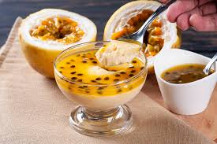

Mousse de Maracuja
Sobremesa leve e refrescante. Rendimento: 6 porcoes.
Ingredientes
- 1 lata de leite condensado (395g)
- 1 lata de creme de leite (sem soro)
- 1/2 xicara de suco de maracuja
- 2 colheres de sopa de polpa de maracuja
- 1 pacote de gelatina incolor (12g)
- 3 colheres de sopa de agua morna
Modo de Preparo
- Dissolva a gelatina na agua morna e reserve.
- Bata o leite condensado, o creme de leite e o suco no liquidificador.
- Adicione a gelatina e a polpa. Bata novamente.
- Despeje em tacas e leve a geladeira por 4 horas.
- Sirva gelado com sementes de maracuja.